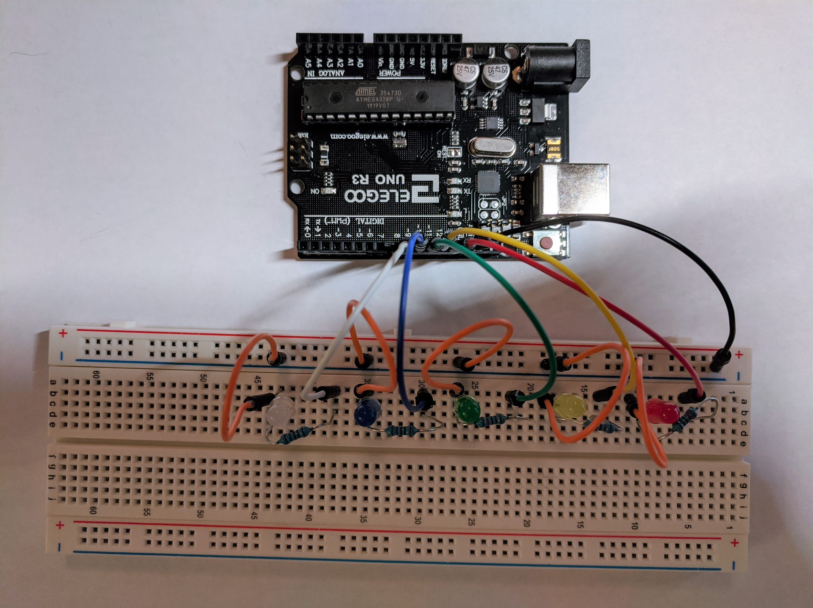
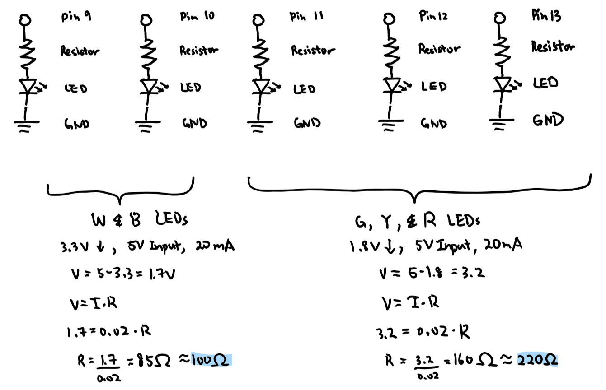

Amanda's Assignment 1!
Here is all the documentation for assignment 1!

This is the Arduino circuit

This is the circuit in action

These are the schematic and resistance calculations
100 and 220 ohm resistors were chosen since they were
the closest to the respective resistances (85 and 160 ohms)
// HCDE 439, A1: Blink!
// Nadya Peek, WIN2020
// create variable called period
// higher number means longer delay
int period = 500;
// function called when file starts
void setup() {
// loops pin initiation for outputs
for (int pin = 13; pin > 8; pin--){
pinMode(pin, OUTPUT); // assigns pins for outputs
}
}
// function executed after setup repeatedly
void loop() {
delay(period); // delays for given timeframe
digitalWrite(13, HIGH); // turn the pin on
delay(period); // delays for given timeframe
digitalWrite(13, LOW); // turn the pin off
// loops pins from highest to lowest (r, y, g, b, & w)
for (int pin = 13; pin > 8; pin--) {
digitalWrite(pin, HIGH); // turn the pin on
delay(period); // delays for given timeframe
digitalWrite(pin, LOW); // turn the pin off
delay(period); // delays for given timeframe
digitalWrite(pin, HIGH); // turn the pin on
}
// loops pins from lowest to highest (w, b, g, y, & r)
for (int pin = 8; pin < 14; pin++) {
delay(period); // delays for given timeframe
digitalWrite(pin, LOW); // turn the pin off
}
}
This is the code snippet